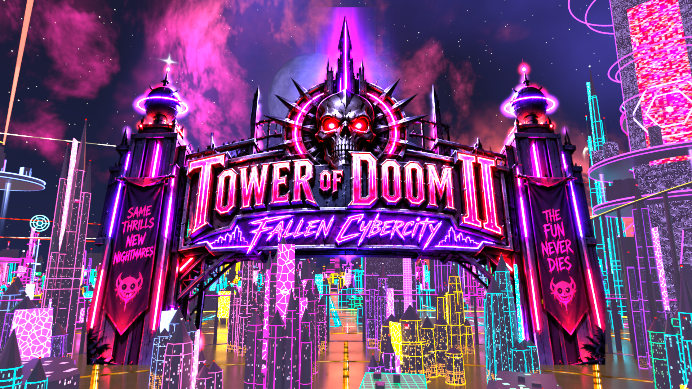

The earlier comparison image is unavailable.

This saved render could not be loaded. See the review notes for its file path.
363 ordinary buildings, four architectural forms
Distinct silhouettes use split masses, offset utility wings and open gaps. Broad armor plates, recessed service channels and restrained cyan/magenta accents replace the old repeated window boxes.
93 Blade foundries
95 Split vaults
93 Transit bastions
82 Forked terraces
The original tall spire geometry and layout remain intact. The replacement blocks retain the existing lot and height limits; the city generator’s random sequence is preserved.
What these images establish
- The celestial composition sits higher above the city. The clearance check covers all 20 bodies and includes the neon skyline, with at least 3° separation.
- Only the title reveal, city and lower-skyline views have matching earlier images. Other views are shown individually.
- These are projections of the Blender sky render. Native BO3 appearance and the final play experience still need the user’s playtest.
- The cinematic reveal is a separate presentation view; use the standard views for direct comparisons.
Blender source master · Rendered sky preview · Review notes · Verified build receipt